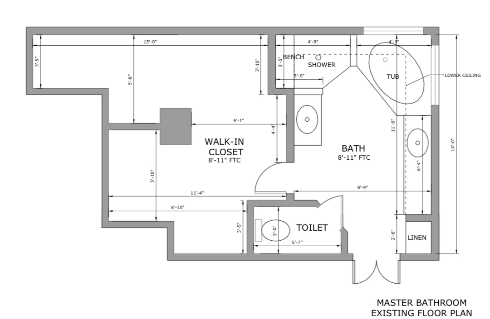
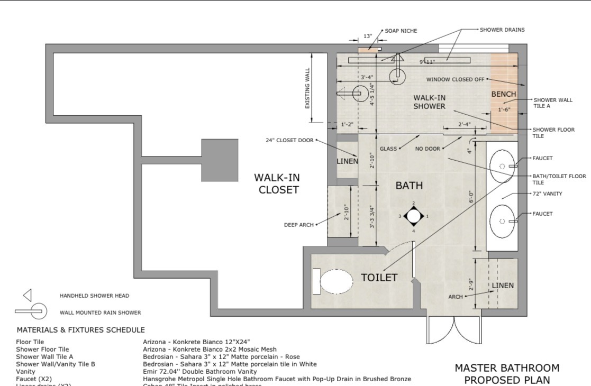
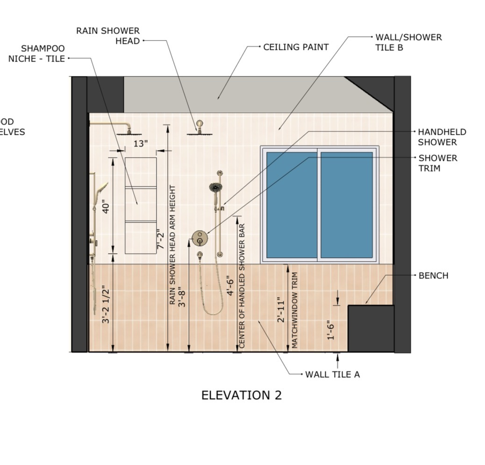
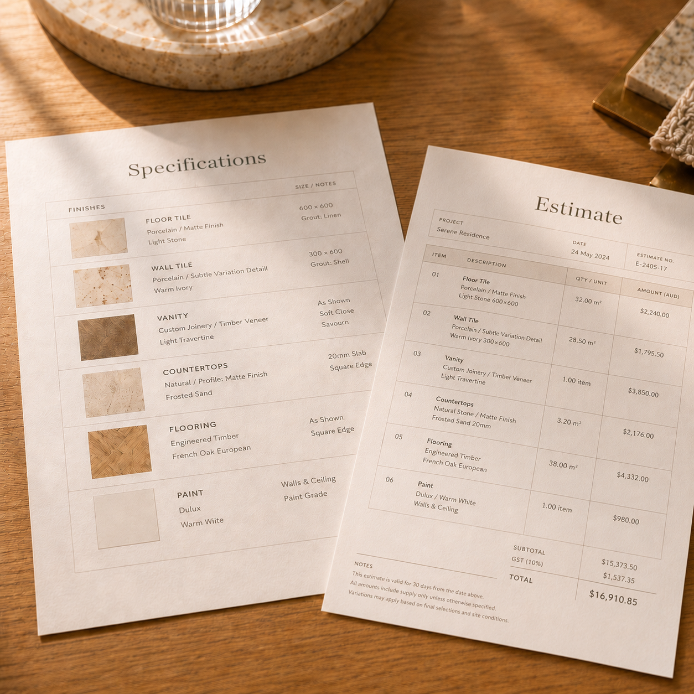
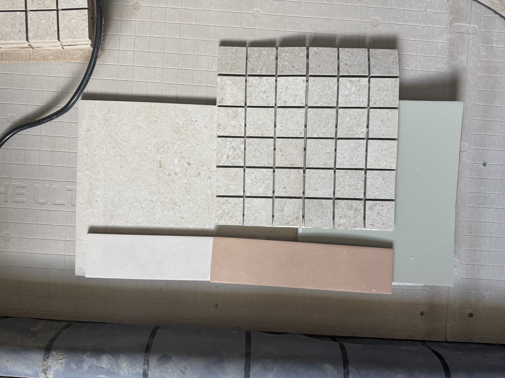
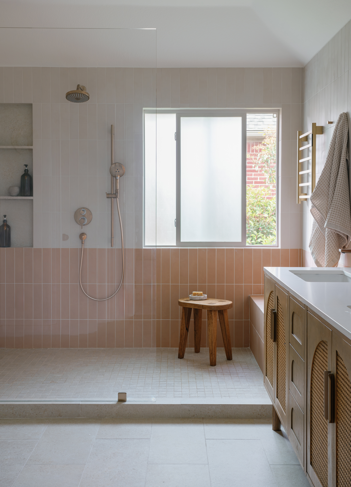

Seven steps, thoughtfully sequenced.
From the first conversation to the day you settle in, every project follows a clear, collaborative path — designed to make the journey feel as considered as the result.
-
Step 01
Initial Consultation
Every project begins with a conversation. We discuss your needs, lifestyle, goals, budget, timeline, and overall vision to create a clear foundation for the project.
-
Step 02
Site Measurements & Space Assessment
I gather measurements and assess the existing space, including layout, architectural conditions, technical constraints, and opportunities for improvement.

-
Step 03
Concept Development & Design Direction
Based on the information gathered, I develop the initial design direction, explore layout options, and present concepts that reflect your needs, style, and project goals.

-
Step 04
Detailed Design & Visualization
Once the direction is approved, the design is developed in greater detail through plans, elevations, material selections, custom details, and visual tools that help bring the concept to life.

-
Step 05
Work Specifications & Cost Estimate
After the design is finalized, I prepare plans, specifications, and project details that can be shared with contractors and vendors to help define the scope of work and gather cost estimates.

-
Step 06
On-Site Work & Finish Selections
As work begins on site, I continue guiding the project while finalizing finish materials such as tile, flooring, plumbing fixtures, lighting, paint colors, hardware, and other key selections.

-
Step 07
Completion of Work
At the final stage, I review the completed work, address remaining details, and help ensure the space comes together as planned — refined, functional, and ready to enjoy.
